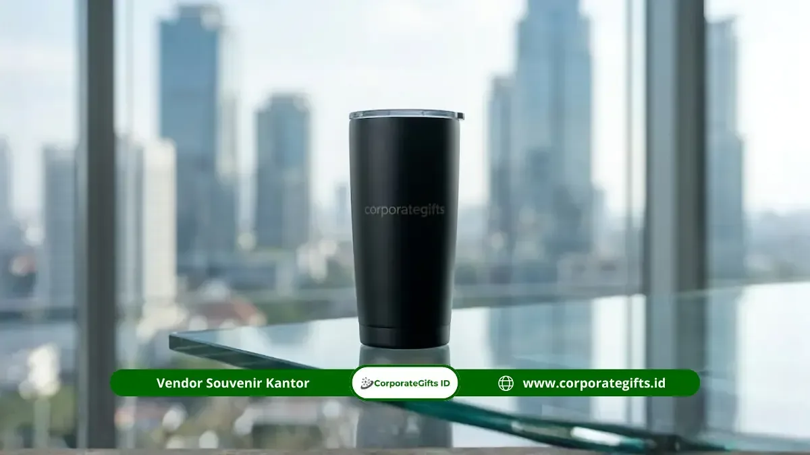

Corporate Gifts - Corporate Gifts merupakan vendor souvenir tumbler yang melayani wilayah Surabaya dengan menyediakan jasa produksi tumbler custom logo untuk kebutuhan korporat, mulai dari konsultasi desain, produksi, hingga pengiriman ke alamat perusahaan.
- Tumbler menjadi salah satu souvenir kantor paling diminati karena fungsional dan tahan lama digunakan sehari-hari.
- Proses pemesanan meliputi konsultasi kebutuhan, pemilihan bahan, desain logo, produksi, hingga pengiriman.
- Bahan dan teknik cetak logo memengaruhi tampilan akhir serta daya tahan tumbler dalam jangka panjang.
- Jumlah pesanan dan tenggat waktu acara perlu dikomunikasikan sejak awal agar produksi berjalan sesuai jadwal.
- Konsultasi langsung membantu perusahaan mendapatkan spesifikasi tumbler yang paling sesuai kebutuhan dan anggaran.
Tumbler custom logo menjadi salah satu jenis souvenir kantor yang paling sering dicari perusahaan di Surabaya, baik untuk kebutuhan gathering internal, seminar, maupun hadiah apresiasi klien.
Panduan ini membahas bagaimana layanan produksi tumbler custom logo bekerja, jenis bahan dan teknik cetak yang tersedia, serta hal-hal yang perlu diperhatikan tim procurement sebelum melakukan pemesanan dalam jumlah besar.
Apa Itu Vendor Souvenir Tumbler yang Melayani Surabaya?
Vendor souvenir tumbler yang melayani Surabaya adalah penyedia produksi tumbler custom logo yang dapat menerima pemesanan dari perusahaan di Surabaya meski proses produksinya berlangsung di lokasi lain dengan sistem pengiriman terpadu.
Layanan ini memungkinkan perusahaan di Surabaya memperoleh tumbler custom logo dengan kualitas produksi yang konsisten, tanpa perlu bergantung pada ketersediaan stok toko lokal.
Proses kerja umumnya dilakukan secara digital, mulai dari pengiriman logo dan brief kebutuhan, hingga konfirmasi mockup desain 3D sebelum produksi massal dimulai.
Model layanan seperti ini relevan bagi perusahaan yang membutuhkan tumbler dalam jumlah besar dengan spesifikasi seragam, misalnya untuk seluruh karyawan pada acara ulang tahun perusahaan atau untuk peserta seminar berskala besar.
Mengapa Tumbler Menjadi Souvenir Kantor yang Banyak Dipilih Perusahaan?
Tumbler dipilih karena tergolong produk fungsional yang digunakan berulang kali oleh penerima, sehingga logo perusahaan yang tercetak pada permukaannya mendapatkan eksposur yang lebih panjang dibandingkan souvenir sekali pakai.
Selain aspek fungsional, tumbler juga tergolong produk yang relatif mudah diproduksi dalam jumlah besar dengan hasil cetak logo yang konsisten di setiap unit.
Karakteristik ini membuat tumbler menjadi pilihan yang efisien bagi perusahaan yang membutuhkan souvenir seragam untuk acara berskala besar, tanpa mengorbankan kualitas tampilan akhir.
Bagaimana Proses Pemesanan Tumbler Custom Logo untuk Perusahaan?
Proses pemesanan tumbler custom logo meliputi konsultasi kebutuhan, pemilihan bahan dan warna, penentuan teknik cetak logo, persetujuan mockup, produksi, lalu pengiriman ke alamat perusahaan di Surabaya.
Tahapan ini dirancang agar hasil akhir sesuai dengan identitas visual perusahaan sekaligus memenuhi standar kualitas produksi.
Berikut alur umum yang biasa dilalui tim procurement saat memesan tumbler custom logo dalam jumlah besar:
- Konsultasi kebutuhan, termasuk jumlah unit, budget, dan tenggat acara.
- Pemilihan bahan tumbler, seperti stainless steel, plastik food grade, atau kaca borosilikat.
- Penentuan teknik cetak logo, misalnya sablon, laser engraving, atau digital UV printing.
- Persetujuan mockup desain sebelum produksi massal dimulai.
- Proses produksi dan quality control untuk memastikan hasil cetak sesuai standar.
- Pengiriman ke alamat perusahaan di Surabaya sesuai jadwal yang telah dikonfirmasi.

Ilustrasi Souvenir Tumbler untuk Perusahaan Surabaya
Bahan Tumbler Apa yang Paling Umum Digunakan untuk Souvenir Kantor?
Bahan stainless steel menjadi pilihan paling umum karena daya tahannya yang baik dan tampilan yang tetap terlihat premium meski digunakan dalam jangka panjang.
Sementara bahan plastik food grade lebih sering dipilih untuk kebutuhan dengan anggaran lebih terbatas namun tetap aman digunakan sehari-hari.
Apa Saja Hal yang Perlu Diperhatikan Sebelum Memesan Tumbler Custom dalam Jumlah Besar?
Sebelum memesan tumbler custom dalam jumlah besar, perusahaan perlu memperhatikan resolusi file logo, waktu produksi, minimum order, dan konfirmasi jumlah penerima akhir.
Kualitas file logo menjadi faktor penting yang sering luput dari perhatian. File beresolusi rendah dapat memengaruhi ketajaman hasil cetak, terutama pada teknik laser engraving yang membutuhkan detail garis presisi.
Selain itu, waktu produksi tumbler custom logo umumnya membutuhkan proses lebih panjang dibandingkan souvenir kertas seperti notebook, sehingga pemesanan sebaiknya diajukan jauh sebelum tanggal acara.
Minimum order juga menjadi hal yang perlu dikonfirmasi sejak awal, karena kebijakan setiap proses produksi dapat berbeda tergantung teknik cetak dan bahan yang dipilih.
Konfirmasi jumlah penerima akhir sebelum produksi dimulai turut membantu menghindari kekurangan atau kelebihan stok pada hari pelaksanaan acara.
Apakah Tumbler Custom Logo Bisa Dipesan dengan Desain Berbeda dalam Satu Batch?
Bisa, meskipun penambahan variasi desain dalam satu batch produksi dapat memengaruhi waktu pengerjaan dan biaya setup, sehingga sebaiknya dikonsultasikan langsung sesuai kebutuhan spesifik perusahaan.
Pertanyaan Seputar Pemesanan Souvenir Tumbler Surabaya (FAQ)
Kesimpulan Praktis
Tumbler custom logo tetap menjadi pilihan souvenir kantor yang efisien dan berdaya guna panjang bagi perusahaan di Surabaya, selama proses pemesanan direncanakan dengan matang mulai dari pemilihan bahan hingga waktu produksi.
Perhatian terhadap detail seperti resolusi logo dan konfirmasi jumlah unit turut menentukan hasil akhir yang maksimal.
Konsultasikan kebutuhan tumbler custom logo perusahaan Anda di Surabaya bersama CorporateGifts.ID sekarang, dan dapatkan estimasi produksi serta jadwal pengiriman yang sesuai dengan acara Anda secepatnya.
Disclaimer: Informasi alur pemesanan dan spesifikasi teknis dalam artikel ini disusun berdasarkan standar layanan pengadaan souvenir korporat CorporateGifts.ID.